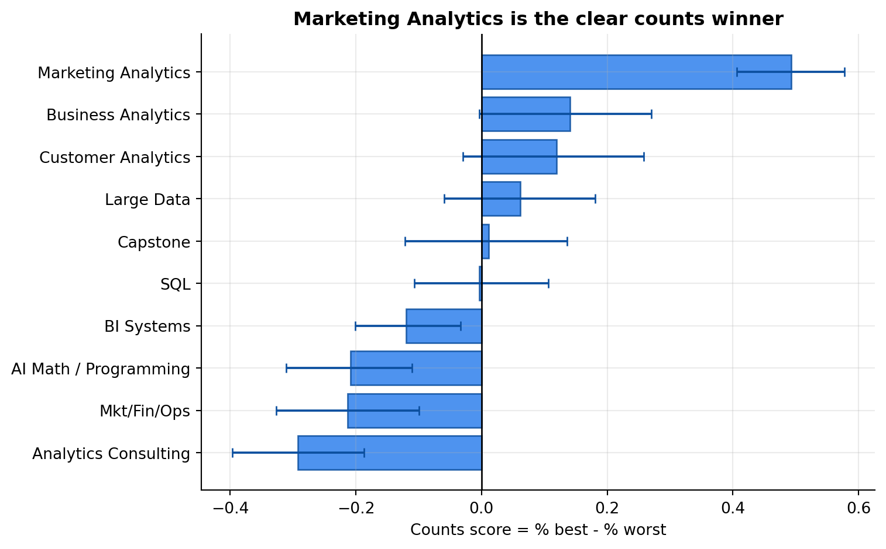
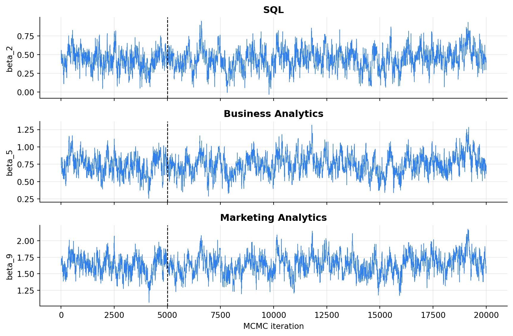
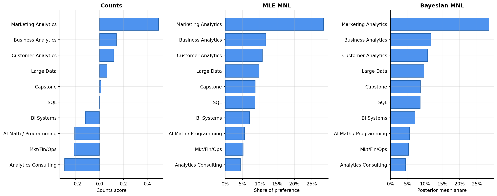

| Quantity | Value |
|---|---|
| Respondents (N) | 85 |
| MaxDiff tasks per respondent (T) | 8 |
| Items per MaxDiff task (J) | 4 |
| Total labeled class items | 10 |
| Analyzed task screens | 680 |
| Analyzed item rows | 2720 |
MaxDiff Analysis of MSBA Class Preferences
Counts, MLE, and Bayesian estimation of the MNL model
Introduction
MaxDiff, also called Best-Worst Scaling, is a survey method for measuring relative preference. Instead of asking people to rate every class on a 1-10 scale, each respondent sees a small set of classes and makes two choices:
- Which class in this set is the best / most preferred?
- Which class in this set is the worst / least preferred?
In this assignment, each core MaxDiff screen shows four MSBA classes. The respondent does not need to rank all 10 classes at once. They only need to make a small trade-off on each screen. Repeating that across many carefully designed screens gives enough information to estimate the relative utility of every class.
Small example. Suppose a student sees: SQL, Large Data, Marketing Analytics, and Capstone. A rating question might let them give all four classes an 8/10, which sounds positive but does not reveal a clear preference. MaxDiff forces a choice: maybe Marketing Analytics is picked as best and SQL as worst. That one screen now tells us Marketing Analytics beat the other displayed options, and SQL lost against the other displayed options.
Why MaxDiff is better than a simple rating scale
Ratings are easy to collect, but they are often hard to compare. One person’s “8” may mean “excellent,” while another person’s “8” may mean “pretty good.” Some respondents also rate everything highly because they do not want to be negative. MaxDiff avoids much of that problem by asking for trade-offs instead of abstract numbers. The result is a cleaner preference signal: what wins, what loses, and by how much.
What this analysis estimates
The 10 items are the core MSBA classes in the survey. The goal is to estimate which classes students prefer relative to each other, not to decide whether a class is objectively good or bad. I use three approaches, moving from simplest to most model-based:
| Method | What it gives us | Main limitation |
|---|---|---|
| Counts analysis | A fast descriptive ranking. It computes how often each class is picked as best minus how often it is picked as worst. This is easy to explain and good for a first look. | It does not fully use the structure of each screen. It treats the score like a summary statistic rather than a model of the actual best/worst choice process. |
| MNL by maximum likelihood | A formal utility estimate for each class. It answers: “what utility values make the observed best/worst choices most likely?” It also converts utilities into interpretable preference shares. | It gives one best estimate per class. Standard errors are available for the utility coefficients, but uncertainty around transformed outputs like shares is less direct. |
| Bayesian MNL | A full posterior distribution for each class utility and preference share. This makes uncertainty easier to communicate with credible intervals. | It requires an MCMC sampler, tuning, and basic convergence checks. The result depends on both the likelihood and the prior, even when the prior is weak. |
Expectations before seeing the results
Before fitting the models, I expected the three methods to agree on the broad ranking but not necessarily on every middle-rank detail. The reason is that the top and bottom classes should produce strong signals if students consistently choose them as best or worst. Middle classes are harder: they may be selected best sometimes, worst sometimes, and often look similar to one another.
| Expectation | Why I expect it | How I will interpret it |
|---|---|---|
| Top and bottom classes should be stable across methods. | If a class is truly very preferred, it should be picked best often and almost never picked worst. If it is truly weak, the opposite should happen. | Agreement at the extremes means the result is not just an artifact of one method. |
| Middle-ranked classes may switch places. | Classes with similar appeal can have close scores and overlapping uncertainty intervals. | Small rank differences in the middle should not be over-interpreted. |
| MNL and Bayesian MNL should be very close. | They use the same likelihood, and the Bayesian prior used here is weak. With 680 task screens, the data should dominate. | Large disagreement would be a warning to check the code, prior, or sampler. |
| Uncertainty intervals should be widest where preferences are ambiguous. | If respondents are split about a class, resampling or posterior draws should show more variability. | Wide or overlapping intervals mean the ranking is less certain. |
The Data
The main data file is maxdiff_design_and_choices.csv. Each row is one item shown on one survey screen. The columns are:
| Column | Meaning |
|---|---|
Record ID |
Anonymized respondent identifier |
Task |
Screen number for that respondent |
Position |
Slot on the screen |
Item |
Numeric item ID |
Response |
1 if picked best, -1 if picked worst, 0 otherwise |
The label file, maxdiff_item_labels.csv, maps item numbers to class names.
The raw file contains both the 4-item MaxDiff screens and additional 2-row anchor-style screens involving an item outside the 10 class labels. Since the assignment asks for the 10 classes, four items per screen, and one best plus one worst pick, I use only the rows that satisfy that structure.
The analysis sample contains 85 respondents, 8 MaxDiff tasks per respondent, and 4 items per task, for a total of 680 task screens and 2,720 item-level rows.
| Check | Number of passing tasks | Total tasks |
|---|---|---|
| Task has 4 rows | 680 | 680 |
| Task has exactly 1 best pick | 680 | 680 |
| Task has exactly 1 worst pick | 680 | 680 |
| Task has exactly 2 neutral rows | 680 | 680 |
| All four checks pass | 680 | 680 |
The cleaned MaxDiff sample passes the structural check: every analyzed screen has one best choice, one worst choice, and two unchosen items.
| item | short_label | times_shown |
|---|---|---|
| 1 | AI Math / Programming | 273 |
| 2 | SQL | 274 |
| 3 | Mkt/Fin/Ops | 272 |
| 4 | Large Data | 276 |
| 5 | Business Analytics | 270 |
| 6 | Analytics Consulting | 267 |
| 7 | Customer Analytics | 276 |
| 8 | Capstone | 272 |
| 9 | Marketing Analytics | 274 |
| 10 | BI Systems | 266 |
Exposure is close to balanced. Each class is shown between 266 and 276 times, so no class gets a large mechanical advantage from simply appearing more often.
Counts Analysis
The counts analysis is the most direct way to read MaxDiff data. It does not estimate a statistical model yet. It simply asks: when a class appeared on a screen, how often did it win and how often did it lose?
For each class, I compute:
\[ \text{score}_j = \%\text{best}_j - \%\text{worst}_j \]
This score is centered around zero:
- A positive score means the class is chosen as best more often than worst.
- A negative score means the class is chosen as worst more often than best.
- A score near zero means the class is either neutral or mixed: it wins and loses at similar rates.
The key advantage is interpretability. For example, if a class has a score of 0.50, that means its best-pick rate is 50 percentage points higher than its worst-pick rate. The key limitation is that this is still a descriptive score. It does not directly model the probability of each best and worst choice conditional on the other items shown on that exact screen.
| item | short_label | times_shown | times_best | times_worst | pct_best | pct_worst | counts_score | counts_rank |
|---|---|---|---|---|---|---|---|---|
| 9 | Marketing Analytics | 274 | 147 | 12 | 53.6% | 4.4% | 0.493 | 1 |
| 5 | Business Analytics | 270 | 93 | 55 | 34.4% | 20.4% | 0.141 | 2 |
| 7 | Customer Analytics | 276 | 104 | 71 | 37.7% | 25.7% | 0.120 | 3 |
| 4 | Large Data | 276 | 77 | 60 | 27.9% | 21.7% | 0.062 | 4 |
| 8 | Capstone | 272 | 72 | 69 | 26.5% | 25.4% | 0.011 | 5 |
| 2 | SQL | 274 | 55 | 56 | 20.1% | 20.4% | -0.004 | 6 |
| 10 | BI Systems | 266 | 23 | 55 | 8.6% | 20.7% | -0.120 | 7 |
| 1 | AI Math / Programming | 273 | 33 | 90 | 12.1% | 33.0% | -0.209 | 8 |
| 3 | Mkt/Fin/Ops | 272 | 43 | 101 | 15.8% | 37.1% | -0.213 | 9 |
| 6 | Analytics Consulting | 267 | 33 | 111 | 12.4% | 41.6% | -0.292 | 10 |
Adding bootstrap confidence intervals
The table above gives a point estimate for each counts score. But a point estimate alone does not show how stable the score is. To add uncertainty, I use a respondent-level bootstrap. The unit of resampling is the respondent, not the individual row, because each respondent answered multiple tasks and those answers are related.
| Bootstrap step | What happens | Why it matters |
|---|---|---|
| 1. Resample respondents | Randomly sample 85 respondents with replacement. Some students appear more than once; some are left out. | This mimics drawing a new sample of students from the same population. |
| 2. Recompute the counts score | For each resampled dataset, calculate % best - % worst for every class. |
This shows how the score would move if the sample were slightly different. |
| 3. Repeat 1,000 times | Store 1,000 bootstrap scores for each class. | A distribution of scores is more informative than one number. |
| 4. Take percentiles | Use the 2.5th and 97.5th percentiles as the 95% interval. | This gives an approximate uncertainty band around each score. |
| short_label | counts_score | score_ci_low | score_ci_high |
|---|---|---|---|
| Marketing Analytics | 0.493 | 0.407 | 0.577 |
| Business Analytics | 0.141 | -0.004 | 0.270 |
| Customer Analytics | 0.120 | -0.029 | 0.258 |
| Large Data | 0.062 | -0.059 | 0.181 |
| Capstone | 0.011 | -0.122 | 0.137 |
| SQL | -0.004 | -0.107 | 0.106 |
| BI Systems | -0.120 | -0.202 | -0.033 |
| AI Math / Programming | -0.209 | -0.311 | -0.111 |
| Mkt/Fin/Ops | -0.213 | -0.327 | -0.099 |
| Analytics Consulting | -0.292 | -0.397 | -0.187 |

Interpreting the counts results
The counts analysis has a clear top and bottom. Marketing Analytics is the strongest class by a large margin: it is picked best in 53.6% of appearances and worst in only 4.4%. Its counts score is 0.493, meaning the best-pick rate is about 49 percentage points higher than the worst-pick rate.
The next group is Business Analytics, Customer Analytics, and Large Data. Their scores are positive, but they are much closer to the middle than Marketing Analytics. This suggests students like them, but not with the same overwhelming strength.
The least preferred classes by this descriptive score are Analytics Consulting, Marketing/Finance/Operations, and AI Math / Programming. These classes have negative scores because they are selected as worst more often than best.
The bootstrap intervals add the most important caution. Marketing Analytics has an interval that stays far above zero, so its lead is very stable. Several middle classes have intervals that cross or come close to zero, which means their exact ranks are less certain. In other words, the top and bottom are meaningful; small differences in the middle should be treated carefully.
From MaxDiff Data to MNL Choices
The counts score is helpful, but it is not yet a choice model. The multinomial logit (MNL) model goes one step deeper: it tries to explain the actual choices on each screen using a utility value for each class.
The idea is simple. Every class has an underlying utility number, called \(\beta_j\). Higher utility means the class is more likely to be selected as best. Lower utility means it is more likely to be selected as worst. We do not observe utility directly; we infer it from repeated choices.
For a screen with four classes \(\{a,b,c,d\}\), the probability that class \(b\) is selected as best is:
\[ P(\text{best}=b) = \frac{\exp(\beta_b)}{\exp(\beta_a)+\exp(\beta_b)+\exp(\beta_c)+\exp(\beta_d)}. \]
This is a soft-max formula. It converts utilities into probabilities. A class with higher utility gets a larger probability, but every displayed class still has some chance of being selected.
After the best item is chosen, I remove it from the screen and model the worst choice among the remaining three. The worst choice uses negative utility, because low-utility items should be more likely to be selected as worst:
\[ P(\text{worst}=c \mid \text{best}=b) = \frac{\exp(-\beta_c)}{\sum_{j \in \text{shown}\setminus\{b\}} \exp(-\beta_j)}. \]
So each MaxDiff screen contributes two pieces of information:
| Choice step | Choice set | Model logic |
|---|---|---|
| Best choice | All 4 displayed classes | Higher \(\beta\) means more likely to be picked best. |
| Worst choice | The 3 remaining classes after removing the best | Lower \(\beta\) means more likely to be picked worst. |
There is one identification issue. If the same constant is added to every \(\beta\), the probabilities do not change. That means only relative utility differences are identified. I handle this by setting \(\beta_1=0\) and estimating \(\beta_2, \ldots, \beta_{10}\) relative to that reference class.
| Quantity | Value |
|---|---|
| Task screens | 680 |
| Rows per screen | 4 |
| Estimated beta parameters | 9 |
| Pinned reference beta | beta_1 = 0 |
MNL via Maximum Likelihood
Maximum likelihood estimation chooses the utility values that make the observed data as likely as possible. In plain English, the model asks:
Which set of class utilities would make students most likely to choose exactly the best and worst classes that they actually chose?
For one task screen, the log-likelihood contribution is the log probability of the observed best choice plus the log probability of the observed worst choice. Summing over all 680 screens gives:
\[ \ell(\boldsymbol{\beta}) = \sum_{\text{tasks}} \left[ \beta_{j_b^*} - \log \sum_{j \in \text{shown}} \exp(\beta_j) - \beta_{j_w^*} - \log \sum_{j \in \text{shown}\setminus\{j_b^*\}} \exp(-\beta_j) \right]. \]
Here \(j_b^*\) is the observed best item and \(j_w^*\) is the observed worst item. The first half rewards the model for assigning high utility to the observed best item. The second half rewards the model for assigning low utility to the observed worst item.
Estimation steps
| Step | What I do in code | Why it is needed |
|---|---|---|
1. Build full_beta |
Insert the pinned reference value \(\beta_1=0\) before the nine estimated coefficients. | The model needs utilities for all 10 classes, but only 9 are freely estimated. |
| 2. Compute best-choice probability | Use the soft-max over the 4 displayed utilities. | This models which class wins on the screen. |
| 3. Compute worst-choice probability | Use soft-max over negative utilities for the 3 remaining classes. | This models which class loses after the best class is removed. |
| 4. Sum log probabilities | Add best and worst log probabilities across all task screens. | The optimizer needs one objective function to maximize. |
| 5. Minimize negative log-likelihood | Use scipy.optimize.minimize with BFGS. |
Python minimizes by default, so minimizing -ll is equivalent to maximizing ll. |
Code
def full_beta(theta):
"""Insert the pinned beta_1 = 0 in front of the 9 estimated parameters."""
beta = np.zeros(10)
beta[1:] = theta
return beta
def row_logsumexp(A):
"""Stable row-wise log-sum-exp for a small 2D array."""
m = np.max(A, axis=1)
return m + np.log(np.exp(A - m[:, None]).sum(axis=1))
def ll(theta):
"""Sequential best-worst MNL log-likelihood."""
beta = full_beta(theta)
# Utilities for the 4 items shown on each task screen.
V = beta[shown_idx]
# Best choice likelihood from all 4 shown items.
ll_best = beta[best_idx] - row_logsumexp(V)
# Worst choice likelihood from the remaining 3 items after removing the best item.
ll_worst = -beta[worst_idx] - row_logsumexp(-beta[remaining_idx])
return float(np.sum(ll_best + ll_worst))
def nll(theta):
"""Negative log-likelihood because scipy minimizes by default."""
return -ll(theta)| item | short_label | beta_mle | se_mle | share_mle | mle_rank |
|---|---|---|---|---|---|
| 9 | Marketing Analytics | 1.630 | 0.146 | 28.4% | 1 |
| 5 | Business Analytics | 0.744 | 0.142 | 11.7% | 2 |
| 7 | Customer Analytics | 0.656 | 0.142 | 10.7% | 3 |
| 4 | Large Data | 0.555 | 0.140 | 9.7% | 4 |
| 8 | Capstone | 0.443 | 0.140 | 8.7% | 5 |
| 2 | SQL | 0.438 | 0.137 | 8.6% | 6 |
| 10 | BI Systems | 0.236 | 0.137 | 7.0% | 7 |
| 1 | AI Math / Programming | 0.000 | -- | 5.6% | 8 |
| 3 | Mkt/Fin/Ops | -0.067 | 0.139 | 5.2% | 9 |
| 6 | Analytics Consulting | -0.239 | 0.141 | 4.4% | 10 |
The MLE converged successfully. The coefficients are relative to item 1, AI Math / Programming, because \(\beta_1\) is pinned to zero. A positive coefficient means the class is preferred to AI Math / Programming on the model’s utility scale. A negative coefficient means it is less preferred.
The share column is easier to explain than the raw \(\beta\) values. It answers a hypothetical question: if all 10 classes were shown together, what share of best choices would each class receive under the model? Under this interpretation, Marketing Analytics receives about 28.4% of the preference share, far above the next classes.
The MLE ranking is almost identical to the counts ranking. Marketing Analytics is still first, followed by Business Analytics, Customer Analytics, and Large Data. The small differences are in the middle, where utilities are closer together. For example, SQL and Capstone are extremely close, so their exact order is not substantively important.
MNL via Bayesian Estimation
The Bayesian model uses the same choice likelihood as the MLE model, but it adds a prior and produces a posterior distribution. Instead of returning only one best estimate for each \(\beta\), it returns many plausible draws of \(\beta\) after seeing the data.
\[ \pi(\boldsymbol{\beta}\mid \boldsymbol{y}) \propto L(\boldsymbol{\beta})\pi(\boldsymbol{\beta}). \]
I use a weakly informative normal prior on the nine estimated utility parameters:
\[ \boldsymbol{\beta} \sim N(\boldsymbol{0}, 10I). \]
This prior says that extremely large utility values are unlikely, but it is wide enough that the data still drive the result. The prior is mainly a stabilizer, not a strong assumption about which classes should win.
MCMC steps
Because the posterior does not have a closed-form solution, I sample from it using a random-walk Metropolis-Hastings algorithm.
| Step | What happens | Intuition |
|---|---|---|
| 1. Start near the MLE | Initialize the chain at the MLE estimate. | This starts the sampler near a high-probability region. |
| 2. Propose a new beta vector | Add small random noise to the current beta vector. | This creates a nearby candidate set of utilities. |
| 3. Compare posterior values | Compute the posterior at the current and proposed beta values. | Better candidates are usually accepted; worse candidates can still be accepted sometimes. |
| 4. Repeat many times | Run 20,000 iterations and drop the first 5,000 as burn-in. | The remaining draws approximate the posterior distribution. |
| 5. Convert each draw to shares | Apply the soft-max to every posterior draw. | This gives uncertainty intervals for preference shares directly. |
Code
prior_sd = np.sqrt(10)
def log_post(theta):
"""Log posterior = log likelihood + log prior."""
log_prior = -0.5 * np.sum((theta / prior_sd) ** 2) - len(theta) * np.log(prior_sd * np.sqrt(2 * np.pi))
return ll(theta) + log_prior
def mh(beta0, n_iter, step, seed=495):
"""Random-walk Metropolis-Hastings sampler."""
rng = np.random.default_rng(seed)
K = len(beta0)
draws = np.empty((n_iter, K))
beta = beta0.copy()
lp = log_post(beta)
accept = 0
for t in range(n_iter):
beta_star = beta + rng.normal(0, step, size=K)
lp_star = log_post(beta_star)
if np.log(rng.random()) < lp_star - lp:
beta = beta_star
lp = lp_star
accept += 1
draws[t, :] = beta
return {"draws": draws, "accept_rate": accept / n_iter}| step | accept_rate |
|---|---|
| 0.05 | 48.2% |
| 0.08 | 28.4% |
| 0.10 | 18.1% |
| 0.12 | 12.9% |
A proposal step of 0.08 gives an acceptance rate close to the target range, so I use that for the full run. The step size matters because it controls how aggressively the chain explores. If the step is too small, the chain moves slowly. If it is too large, too many proposed moves are rejected.
| Quantity | Value |
|---|---|
| Iterations | 20000.0 |
| Burn-in | 5000.0 |
| Post burn-in draws | 15000.0 |
| Proposal step | 8.0% |
| Acceptance rate | 28.9% |

The trace plots look like fuzzy caterpillars after burn-in rather than slow monotonic drifts. The final acceptance rate is about 29%, which is reasonable for this simple random-walk sampler. This does not prove perfect convergence, but it gives reasonable evidence that the sampler is exploring the high-posterior region rather than getting stuck.
| item | short_label | beta_post_mean | beta_ci_low | beta_ci_high | share_post_mean | share_ci_low | share_ci_high | bayes_rank |
|---|---|---|---|---|---|---|---|---|
| 9 | Marketing Analytics | 1.642 | 1.351 | 1.950 | 28.4% | 24.3% | 33.0% | 1 |
| 5 | Business Analytics | 0.750 | 0.465 | 1.043 | 11.7% | 9.6% | 14.0% | 2 |
| 7 | Customer Analytics | 0.669 | 0.366 | 0.972 | 10.8% | 8.8% | 12.9% | 3 |
| 4 | Large Data | 0.564 | 0.309 | 0.855 | 9.7% | 8.0% | 11.6% | 4 |
| 8 | Capstone | 0.450 | 0.171 | 0.753 | 8.6% | 7.1% | 10.4% | 5 |
| 2 | SQL | 0.445 | 0.162 | 0.731 | 8.6% | 7.1% | 10.3% | 6 |
| 10 | BI Systems | 0.250 | -0.013 | 0.518 | 7.1% | 5.8% | 8.5% | 7 |
| 1 | AI Math / Programming | 0.000 | 0.000 | 0.000 | 5.5% | 4.4% | 6.7% | 8 |
| 3 | Mkt/Fin/Ops | -0.054 | -0.335 | 0.243 | 5.2% | 4.3% | 6.4% | 9 |
| 6 | Analytics Consulting | -0.231 | -0.500 | 0.060 | 4.4% | 3.5% | 5.3% | 10 |
The Bayesian estimates are very close to the MLE estimates. This is expected because the prior is weak and the dataset has 680 task screens. The posterior mean share for Marketing Analytics is again about 28%, and its 95% credible interval is clearly above the other classes.
The credible intervals are the main advantage of the Bayesian version. They show that the top class is clearly separated, but many middle classes overlap. For example, SQL and Capstone are almost tied, so the Bayesian result says they should be treated as similar rather than meaningfully different.
Comparing the Three Methods
The final table puts the counts score, MLE share, and Bayesian share side by side. This is the main robustness check: if all three approaches rank classes similarly, then the conclusion is not coming from one fragile modeling choice.
| item | short_label | counts_score | counts_rank | share_mle | mle_rank | share_post_mean | bayes_rank |
|---|---|---|---|---|---|---|---|
| 9 | Marketing Analytics | 0.493 | 1 | 28.4% | 1 | 28.4% | 1 |
| 5 | Business Analytics | 0.141 | 2 | 11.7% | 2 | 11.7% | 2 |
| 7 | Customer Analytics | 0.120 | 3 | 10.7% | 3 | 10.8% | 3 |
| 4 | Large Data | 0.062 | 4 | 9.7% | 4 | 9.7% | 4 |
| 8 | Capstone | 0.011 | 5 | 8.7% | 5 | 8.6% | 5 |
| 2 | SQL | -0.004 | 6 | 8.6% | 6 | 8.6% | 6 |
| 10 | BI Systems | -0.120 | 7 | 7.0% | 7 | 7.1% | 7 |
| 1 | AI Math / Programming | -0.209 | 8 | 5.6% | 8 | 5.5% | 8 |
| 3 | Mkt/Fin/Ops | -0.213 | 9 | 5.2% | 9 | 5.2% | 9 |
| 6 | Analytics Consulting | -0.292 | 10 | 4.4% | 10 | 4.4% | 10 |

The three methods tell the same overall story. Marketing Analytics is the clear favorite under every method. Business Analytics, Customer Analytics, and Large Data form the next strongest group. Analytics Consulting, Marketing/Finance/Operations, and AI Math / Programming are consistently at the bottom.
The disagreements are small and mostly in the middle. That is exactly where we should expect them: the underlying utilities are close, so small modeling differences or sampling noise can flip nearby ranks. The MNL adds value over counts because it models the choice process directly. Every task contributes information through the full set of items shown, not only through the items selected as best and worst. The Bayesian MNL adds an additional advantage: uncertainty for shares of preference is easy to compute by pushing every posterior draw through the soft-max and summarizing the resulting share distribution.
Conclusion and Next Steps
The substantive result is straightforward: Marketing Analytics is the clear favorite in this sample. It is not just slightly ahead. It is separated from the other classes in the counts score, the maximum-likelihood MNL shares, and the Bayesian posterior shares.
The results can be summarized as:
- Clear top class: Marketing Analytics.
- Next strongest group: Business Analytics, Customer Analytics, and Large Data.
- Middle / close group: Capstone, SQL, and BI Systems. These are close enough that small rank differences should not be over-interpreted.
- Lowest-ranked group: Analytics Consulting, Marketing/Finance/Operations, and AI Math / Programming.
- Uncertainty takeaway: The confidence and credible intervals strongly support the top result, but they also show that several middle-ranked classes overlap.
For a non-technical reader, I would describe the three methods this way:
| Method | Best use | What to be careful about |
|---|---|---|
| Counts | Quick executive dashboard or first-pass ranking. | Easy to explain, but not a formal choice model. |
| MLE MNL | Formal model with utility estimates, standard errors, and preference shares. | Produces point estimates, so uncertainty for shares needs extra work. |
| Bayesian MNL | Preference shares with direct uncertainty intervals. | Requires MCMC and basic convergence checking. |
There are also important caveats. This is a sample of MSBA students who responded to the survey, so the results may not generalize to every student. Preferences may depend on when students took each class, who taught it, how recently the course happened, and each student’s background. The model also estimates one shared population-level utility vector; it does not estimate individual-level taste differences.
Recommended next steps
- Estimate a hierarchical Bayesian MNL model so each student has their own utility vector drawn from a population distribution.
- Look for polarization, not just average preference. Some classes may have lower average appeal but stronger appeal to a specific subgroup.
- Compare preferences by student background, such as technical vs. non-technical background, if that data is available.
- Build a simple simulator that predicts preference share under different hypothetical course menus.
- Use the intervals in reporting, especially for the middle-ranked classes, so the story does not overstate small rank differences.